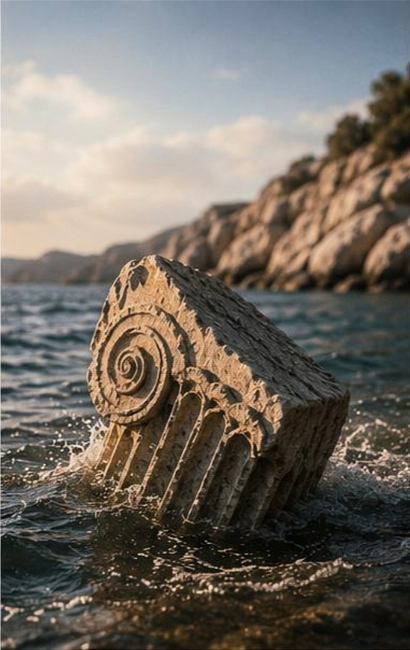

FRAGMENT 03
DENİZDEN ÇIKAN TAŞ FRAGMENT
SU, KAYBOLANI GERİ GETİRİR.

Erythrai'nin kuzey kıyılarında dalgaların yüzyıllarca aşındırdığı bu kutsal kireçtaşı parçası, rüzgar tanrılarının denizle birleştiği ritüel alanından günümüze ulaşmıştır.
"Suyun altı, söylenmemiş sözlerle dolu."